Bilancia a mezza luna lineare
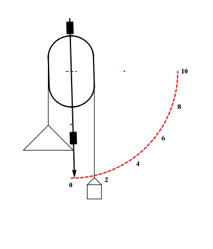
La bilancia è costituita da un corpo rigido libero di ruotare nel piano verticale. Una corda scorre senza strisciare attorno al corpo rigido opportunamente sagomato. All'estremo sinistro della corda è applicata la massa m da misurare, mentre all'estremità destra vi è una massa al solo scopo di equilibrare la tara. Quando m è pari a zero il corpo rigido si porta nella posizione verticale, infatti questa configurazione minimizza la quota del baricentro. Sia d[α] la distanza che corre tra la corda e il centro di rotazione e α l'angolo che l'asta compie per effetto della rotazione, con lo zero in posizione basa angoli crescenti in senso antiorario.
Si vogliono determinare:
la funzione d[α] tale che garantisce la proporzionailtà tra m e α,
la forma del corpo rigido su cui scorre la corda.
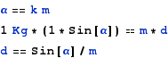
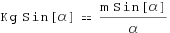
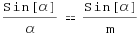
Imponendo la proporzionalità tra α e m, non è riduttivo imporre m=α.
Si ha allora che la funzione cercata è:
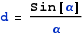
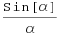
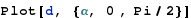
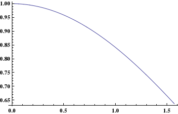
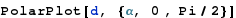
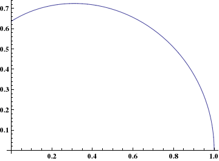
Per sagomare la forma del corpo bisogna imporre che una corda verticale ad esso tangente disti la distanza d dal centro di rotazione.
Segue l'espressione del fascio di rette che descrive la posizione della corda al variare di α.
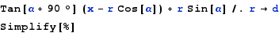
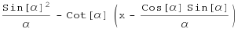
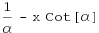
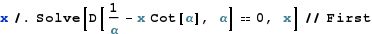
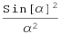
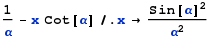
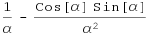
La forma della guida è rappresentabile in forma analitica dall'espressione parametrica:
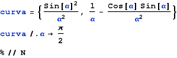
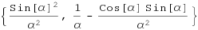
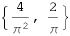
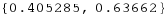
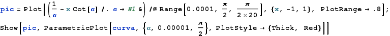
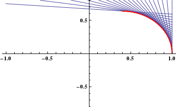
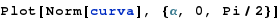
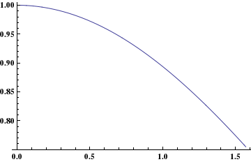
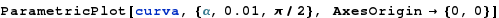
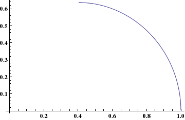
Segue il calcolo dell'integrale curvilineo utile a misurare quanta corda viene svolta al variare di α.
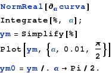
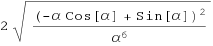
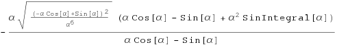
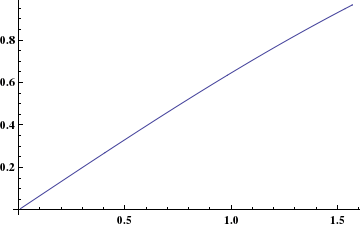
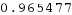
La rappresentazione del corpo rigido:
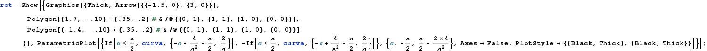
Animazione grafica dell' intero sistema:
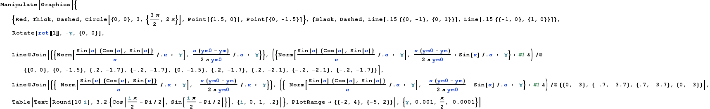